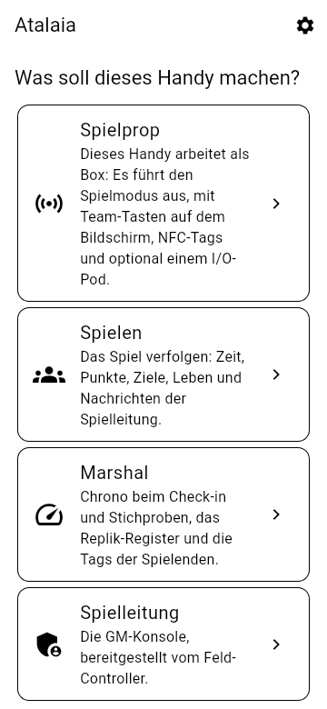
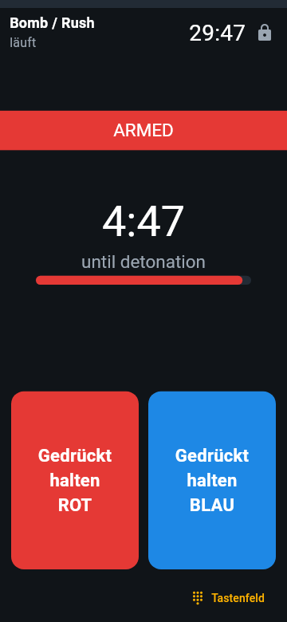
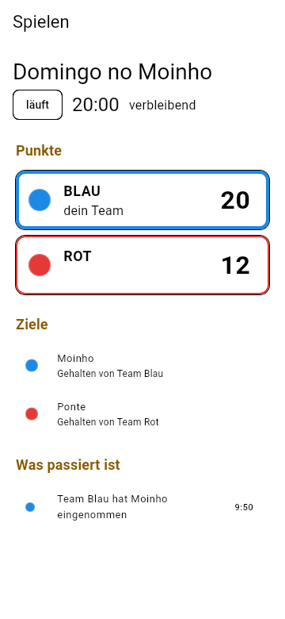
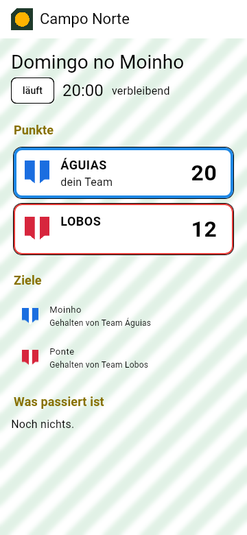
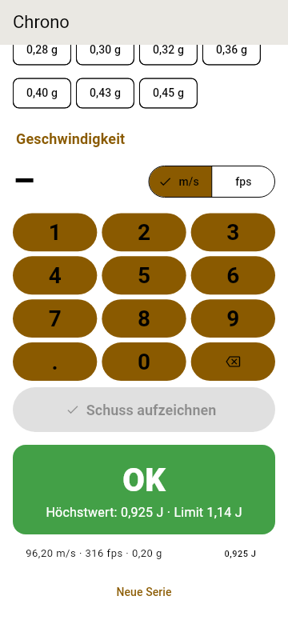

Domination
Ein Team hält ein paar Sekunden lang den Eingang des Props, um es einzunehmen, und punktet in jedem Takt, solange es das Prop hält. Das andere Team kann es jederzeit übernehmen.
Diese Seite wurde von einem KI-Modell übersetzt und noch nicht geprüft. Spielst du auf Deutsch? Hilf uns beim Prüfen: docs/translations im GitHub-Repository.
Pre-Alpha · Software der Phasen 1 und 2 fertig, echte Boards spielen auf dem Labortisch ganze Spiele mit dem Feld-Controller, Phase 3 in Software fast fertig, Phasen 4 und 5 in Software gebaut · noch nicht feldtauglich
Atalaia ist eine offene Plattform für die elektronischen Props von Airsoft, Paintball und Milsim: die Boxen, die Teams einnehmen, die Bomben, die sie scharf machen und entschärfen. Bau eine Domination-Box aus einem Mikrocontroller für 20 € (eine winzige, günstige Computerplatine), mach aus einem alten Android-Handy ein Hacking-Terminal, lass ein Milsim-Wochenende mit 20 Boxen über ein LoRa-Mesh laufen (Funk mit großer Reichweite und wenig Strom, den die Boxen über das Feld weiterreichen), und schreib deine eigenen Spielmodi als kleine Skripte. Jedes Spiel läuft auf dem Feld selbst: keine Cloud, kein Internet nötig, und kein Hersteller kann dich festnageln.
Atalaia (a-ta-LAI-a) ist Portugiesisch für Wachturm: ein Ausguck auf einem Hügel, der nach Gefahr Ausschau hielt und die Warnung weitergab. Warum dieser Name?

Zum Spielen brauchst du kein Technikwissen. So wird ein Spiel laufen, sobald die Boxen gebaut sind (Phasen 1 und 2); der Simulator spielt dieselben Modi heute schon auf einem Computer.
Die Orga verteilt die Boxen auf dem Feld und wählt einen Spielmodus, etwa Domination, am Tastenfeld einer Box oder am Handy, in weniger als einer Minute.
Um eine Box einzunehmen, hält ein Team ein paar Sekunden lang den Knopf seiner Farbe gedrückt. Die Box leuchtet in dieser Farbe und punktet für das Team, bis die Gegenseite sie zurückholt.
Jede Box meldet sich per Funk beim Feld-Controller, einem kleinen Computer in der Basis; weit entfernte Boxen werden von denen dazwischen weitergeleitet. Eine Box, die den Kontakt verliert, spielt weiter und holt später auf.
Der Controller zählt alles zusammen. Die Orga verfolgt das Spiel live auf dem Handy, und das Feld kann den Punktestand auf einem großen Bildschirm oder in einem Stream zeigen.
Elektronische Props bringen viel ins Spiel, aber kommerzielle Systeme sperren die Regeln in geschlossene Firmware. Neue Modi warten auf den Hersteller, es gibt keine öffentliche API, und eigene Hardware kannst du nicht einbinden. Atalaia macht es anders.
Jedes Spiel läuft auf dem Feld selbst, komplett offline, vom einzelnen Haus bis zum kilometergroßen Wald. Internet ist optional.
Günstige ESP32-Boards, scheckkartengroße Raspberry-Pi-Computer, einfache Boards der Arduino-Klasse und neue oder ausgediente Android-Handys haben alle ihren Platz im selben Spiel. Die Software für die ESP32-Boxen, den Feld-Controller und Android-Handys ist geschrieben; die Boards der Arduino-Klasse kommen später.
Spielmodi sind kurze Lua-Skripte, kleine Textdateien mit Regeln, plus eine Datei mit Einstellungen: leicht zu lesen, zu ändern und zu teilen, und kein Modus braucht eigenen Code in der eingebauten Software der Boxen. Vorerst haben die Boxen ihre Modi eingebaut; einen neuen ohne Neuflashen (Neuinstallieren) dieser Software zu schicken, kommt noch.
Props sprechen Skirmesh-RF, ein dokumentiertes Funkprotokoll, also kann jede und jeder ein Gerät bauen, das mitspielt. Der Feld-Controller bietet MQTT-, REST- und WebSocket-APIs für Anzeigetafeln, Stream-Overlays und andere Tools.
Rollen, Squads, Check-in am Feld mit einem gedruckten Aushang und ein Chrono-Register, das die signierten Messwerte jeder Replik für Stichproben aufbewahrt, sind in Software gebaut; eigene Szenarien kommen in Phase 4.
Felder, die Eintritt nehmen, und Leute, die Boxen verkaufen, sind willkommen. Wer eine geänderte Version weitergibt oder betreibt, teilt die Änderungen.
Einfach gesagt: Die Props auf dem Feld funken mit dem Feld-Controller, einem kleinen Computer in der Basis, der das Spiel leitet und die Punkte zählt. Handys verbinden sich per WLAN mit ihm, Anzeigetafeln, Stream-Overlays und Karten-Apps wie ATAK über seine API. Ein optionaler Site-Server im Internet verwaltet Konten und Verlauf. Der Controller, seine API und die Konsole der Orga sind gebaut und auf einem Computer getestet, noch nicht auf dem Feld; vom Site-Server gibt es bisher nur das Grundgerüst und die Konten (Anmeldung mit Zwei-Faktor-Codes und Rollen pro Feld; noch keine Spieldaten).
Unter der Haube nutzt jedes Gerät, das Spielmodi ausführt, denselben gemeinsamen Kern, geschrieben in C11, und dieselben Lua-Modi; nur eine dünne Schicht pro Hardware-Art ist anders. Ein einmal geschriebener Modus läuft auf einer Box, einem Handy oder einem Raspberry Pi gleich.

Die Props funken über LoRa, einen Funk mit großer Reichweite und wenig Strombedarf, im eigenen Protokoll von Atalaia, Skirmesh-RF. Zwei Diagramme zeigen, was LoRa auf einem Feld kann und was nicht, und wie ein Protokoll auf sehr unterschiedlichen Geräten läuft. Nichts davon war schon auf einem echten Feld.
Modi reagieren auf Absichten („ein Team beansprucht dieses Prop“), nicht auf Hardware, also läuft dasselbe Skript auf einer Field Box, einer Box mit Tastenfeld oder einem Android-Handy. Elf Modi, ein Modifikator und das Medic-Kit sind heute in Software geschrieben und getestet; noch keiner lief auf einem echten Feld.
Ein Team hält ein paar Sekunden lang den Eingang des Props, um es einzunehmen, und punktet in jedem Takt, solange es das Prop hält. Das andere Team kann es jederzeit übernehmen.
Die Angreifenden machen die Bombe scharf und verteidigen sie; die Verteidigenden müssen sie entschärfen, bevor die Zündzeit abläuft. Scharf machen und entschärfen durch Gedrückthalten eines Knopfs, oder jedes Team bekommt seinen eigenen Code fürs Tastenfeld.
Spielende tragen signierte NFC-Tags. Ein Team scannt die gesammelten Tags an einer Station: Ein gegnerischer Tag bestätigt den Kill, ein Tag aus dem eigenen Team verweigert ihn. Gefälschte Tags werden abgelehnt.
Acht Aufnahmen der echten Firmware der Field Box (ESP32, LVGL 9.2, 320 × 240 TFT), die im Emulator Wokwi läuft. Die Oberfläche der Box ist hier auf Englisch. Die Firmware läuft inzwischen auf einem echten Heltec V4.3; diese Bilder stammen aus dem Emulator. Tippe oder klicke auf ein Bild, um es größer zu sehen.


Das Bauhandbuch (auf Englisch) enthält den vollständigen Schaltplan und die Anleitung zum ersten Flashen für den Heltec WiFi LoRa 32 V4.
Die eigenen Bildschirme der App gibt es auf Portugiesisch, Englisch, Deutsch und traditionellem Chinesisch, und sie zeichnet die Bildschirme jedes Modus aus denselben YAML-Dateien wie die Field Box. Das sind die Testbilder der App, keine Fotos eines Handys: Die App lief bisher auf Android-Emulatoren, noch nicht auf einem echten Handy.





Das Medic-Kit zeichnet seine Bildschirme aus denselben YAML-Dateien auf einer Field Box und auf einem Android-Prop, auf Portugiesisch, außer die Spielleitung stellt Englisch ein. So zeichnet die App sie:


Hardware brauchst du nicht: Der gemeinsame Kern läuft auf einem Computer. Der Simulator spielt einen Modus in deinem Browser: Halte Team-Knöpfe gedrückt, sieh dir den Bildschirm jedes Props an und verfolge das Event-Log. Die Befehle unten tippst du in ein Terminal.
cmake -S core -B build -DATALAIA_SHARED=ON
cmake --build build
cd simulator
python -m atalaia_sim serve ../modes/bombcd simulator
python ../tools/docker_sim.py serve ../modes/bombDann öffne http://localhost:8000. Du brauchst Python 3.10+ mit PyYAML. Die Anleitung zum Simulator (auf Englisch) hat alle Optionen.
Die Firmware der Field Box, des USB-Funkmodems und des I/O-Pods ist geschrieben, und alle drei laufen in Tests auf einem Computer. Die der Field Box und des Modems laufen auf echten Heltec V4.3 auf dem Labortisch: Eine Box tritt über Funk den Spielen des Feld-Controllers bei, mit einem zweiten Board als Modem, spielt sie bis zum Ende und bekommt Firmware-Updates per Funk, wobei der kleine Bildschirm des Boards das Spiel zeigt; die des Pods lief noch auf keinem Board. Um ein nacktes Board ohne Box zu testen, gibt es eine Labor-Version der Firmware (Tasten über das USB-Kabel). Um eine Box zu bauen und zu flashen, folge dem Bauhandbuch; die Anleitung zur Firmware baut auch Modem und Pod (beide auf Englisch).
Bau die Debug-APK der App mit Docker und installiere sie auf einem Handy mit Android 8.0 oder neuer oder im Android-Emulator, wie die Anleitung zur App (auf Englisch) erklärt. Sie lief auf Emulatoren, noch nicht auf einem echten Handy.
Sechs Phasen, jede mit einem echten Feldtest als Abschluss, ihrem Gate. Die Software ist der Hardware vorausgeeilt: Die Phasen 1 und 2 sind in Software fertig, echte Boards spielen auf dem Labortisch schon ganze Spiele mit dem Feld-Controller, und die Gates warten auf gebaute Boxen und Feldtests; Phase 3 ist in Software fertig, außer iOS und den letzten Teilen des Handys als Feld-Controller, und alle Software-Schritte der Phasen 4 und 5 sind gebaut und warten auf Hardware, einen echten Server und das Repository der Registry.
Gemeinsamer Kern, Lua-Sandbox, Skirmesh-RF-Codec und Browser-Simulator. Gate erreicht.
Firmware der Field Box und ein Bauhandbuch; auf dem Labortisch spielt ein echtes Board ganze Spiele, sein kleiner Bildschirm zeigt Haltebalken, Punkte und Haltezeit in vier Sprachen, und es wartet auf die erste gebaute Box.
Skirmesh-RF über LoRa, Feld-Controller, API, GM-Konsole und ein Modus-Paket, in Software getestet; auf dem Labortisch spielen echte Boards ganze Spiele mit dem Feld-Controller über Funk (Einladungen, Eroberungen, Koppeln per Code, Updates per Funk, ein fehlender Modus nachgeladen) und warten auf 5 gebaute Boxen auf einem Feld.
Android-Props, der I/O-Pod, die Spieler-App und die Modi, die Handys brauchen, Money Factory eingeschlossen: in Software fertig, außer iOS und den letzten Teilen des Handys als Feld-Controller; der Feldtest wartet auf echte Handys und Pods.
Site-Server, Spielplanung und Anmeldung, eigene Szenarien, erweiterte Modi, ATAK. Alle Software-Schritte sind gebaut: erweiterte Modi (Master und Satelliten, das Hacking-Terminal, VIP / Payload und die Logik von Zielfenster), eigene Szenarien (ihre Laufzeit, ihr Compiler, der Editor in der Konsole und die Ziele in der App), Geo-Funktionen im Kern, der ATAK-Feed (auf dem Feld und, über den Site-Server, für Staff außerhalb), und die Konten des Site-Servers, Rechte an persönlichen Daten, Controller-Sync, Chrono-Register, Spielplanung mit öffentlichen Feldseiten, Feeds und Anmeldung, Club-Profile mit Branding-Sync, Spielverlauf und die Szenario-Bibliothek, Gerätezustand, ein Firmware-Katalog, Firmware-Updates per Funk für die Field Box, Boxen ins Feld aufnehmen (NFC-Feldkarte, USB-Kabel oder der Code, den die Box zeigt), Boxen per Funk ins nächste Spiel einladen und ein Start, der wartet, bis jede Rolle eine Box hat, die Remote-Spielleitung, Webseiten für das Staff und das Deployment (HTTPS, verschlüsselte Backups, Wiederherstellung), der Hosted-Modus für viele Felder auf einem Server, mit seinem Deployment. Es fehlen: ein echter Server mit Domain, eine rechtliche Prüfung, bevor der Hosted-Modus live geht, und die Tests auf Hardware.
Alle Software-Schritte sind gebaut: der visuelle Modus-Editor, live im Simulator getestet; signierte Modus-Pakete, vom Editor selbst erstellt, eine Sandbox-Ausbruch-Testreihe in der CI, der Feld-Controller installiert signierte Modi, Boxen bekommen die signierten Modi, die ihnen fehlen, von der GM-Konsole, Szenarien aus Blöcken in der Konsole, die Modus-Registry als Vorlage bereit, mit ihren Prüfungen und dem Verifiziert-Siegel, Deutsch und traditionelles Chinesisch (KI-Entwürfe, noch nicht von Muttersprachigen geprüft) und Bauanleitungen für Satellit, I/O-Pod und Ziel-Addon, als Text. Es fehlen: das Anlegen des Registry-Repositorys und die Hardware: die Träger-Platine, Fotos echter Builds, Community-Inhalte von einem Feld.
Die ganze Roadmap, mit dem Inhalt jeder Phase und ihrem Gate →
Hier werden sich Felder, Teams und Bastelnde treffen. Alles ist freiwillig: Der Hub enthält nur, was Leute veröffentlichen möchten, und Spieldaten bleiben auf den eigenen Servern jedes Felds.
Fragen, Ideen, Reviews des Designs und Berichte von Events. Zu den Discussions
Fotos, Stücklisten, Gehäusedateien und Verdrahtungsnotizen für jeden Bau, angefangen mit den ersten Prototypen der Field Box.
Eine freiwillige Liste von Feldern und Teams, die Atalaia nutzen, mit Region, Geländeart und einem Kontakt-Link.
Die Modus-Registry, mit Beschreibungen, Downloads und Bewertungen der Community.
Freiwillige, anonyme Summen von Versionen, Plattformen und gespielten Modi. Standardmäßig aus.
Für Clubs ohne IT-Unterstützung, zum Selbstkostenpreis, mit getrennten und exportierbaren Daten jedes Clubs.
Atalaia wird von Spielenden, Feldbetreibenden und Bastelnden gebaut. Du kannst heute schon helfen:
Jeder Commit trägt eine Zeile Signed-off-by, und das Projekt ist strikt Clean-Room, von Grund auf neu geschrieben: kein Code, keine Firmware, keine Handbücher, Töne oder Bilder aus einem kommerziellen Produkt.
Eine atalaia ist ein Wachturm: ein Ausguck auf einem Hügel oder an einem Küstenstreifen. Das Wort kam aus dem Arabischen aṭ-ṭalāʾiʿ, „die Späher“, ins Portugiesische, und estar de atalaia heißt noch heute „auf der Hut sein“.
Ein Feld-Controller sieht jedes Prop auf dem Feld und sagt der Spielleitung sofort, wenn sich etwas ändert. Auch Wachtürme waren local-first und betrieben das ursprüngliche Mesh mit wenig Bandbreite: Rauch bei Tag, Feuer bei Nacht, von Turm zu Turm weitergegeben. Skirmesh-RF folgt denselben Regeln mit LoRa.
Props von Atalaia sind Spielausrüstung. Lass sie wie Spielprops aussehen: kräftige Farben, klare Aufschriften „GAME PROP“ und nichts, was einem echten Sprengsatz ähnelt. Transportiere sie in beschrifteten Koffern, lass sie außerhalb des Felds nie unbeaufsichtigt und geh sorgsam mit Lithium-Akkus um.